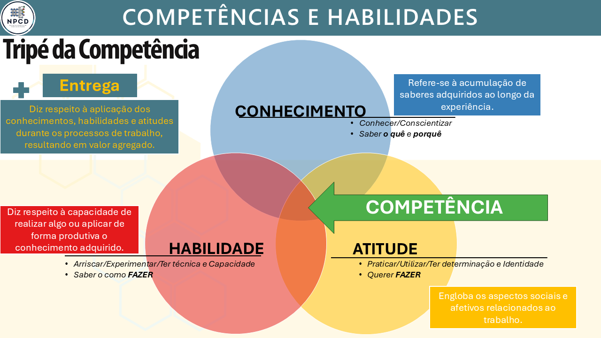

| Dilema / Opção | P01 (Analítico) | P02 (Operações) | P03 (Criativo) | P04 (Comunicador) | P05 (Líder) | P06 (Sustentável) |
|---|---|---|---|---|---|---|
| 1. Quali/Prod (ISO 9001) | ||||||
| ↳ A. Compliance/Cliente | +2.0 | +0.0 | +0.0 | +0.0 | +0.0 | +5.0 |
| ↳ B. Negociação/Crise | +0.0 | +2.0 | +0.0 | +5.0 | +0.0 | +0.0 |
| ↳ C. Burlar/Meta | +5.0 | +0.0 | +0.0 | +0.0 | +2.0 | +0.0 |
| 2. SST/Cultura (ISO 45001) | ||||||
| ↳ A. Ética/Risco 0 | +0.0 | +0.0 | +0.0 | +0.0 | +2.0 | +5.0 |
| ↳ B. Clima/Equipe | +0.0 | +0.0 | +2.0 | +5.0 | +0.0 | +0.0 |
| ↳ C. Investigação/RH | +2.0 | +0.0 | +0.0 | +0.0 | +5.0 | +0.0 |
| 3. Amb/Orçam (ISO 14001) | ||||||
| ↳ A. Parar/Trocar | +0.0 | +0.0 | +0.0 | +0.0 | +2.0 | +5.0 |
| ↳ B. Monitorar/Risco | +2.0 | +5.0 | +0.0 | +0.0 | +0.0 | +0.0 |
| ↳ C. Reduzir/Negociar | +0.0 | +0.0 | +5.0 | +2.0 | +0.0 | +0.0 |
| 4. Auditoria (ISO 19011) | ||||||
| ↳ A. Reportar/NC | +0.0 | +0.0 | +0.0 | +0.0 | +5.0 | +2.0 |
| ↳ B. Barganhar/Prazo | +0.0 | +0.0 | +0.0 | +5.0 | +2.0 | +0.0 |
| ↳ C. Manobra/Sistema | +0.0 | +2.0 | +5.0 | +0.0 | +0.0 | +0.0 |
| 5. Social/Lucro (NBR 16001) | ||||||
| ↳ A. Transparência | +0.0 | +0.0 | +0.0 | +2.0 | +0.0 | +5.0 |
| ↳ B. Compens. Cruzada | +0.0 | +0.0 | +5.0 | +2.0 | +0.0 | +0.0 |
| ↳ C. Eficiência Legal | +5.0 | +2.0 | +0.0 | +0.0 | +0.0 | +0.0 |
| 6. Indicador (ISO 9001) | ||||||
| ↳ A. Serviço/Redação | +0.0 | +0.0 | +2.0 | +5.0 | +0.0 | +0.0 |
| ↳ B. Vetar/Postura | +0.0 | +0.0 | +0.0 | +0.0 | +5.0 | +2.0 |
| ↳ C. Estatística/Causa | +5.0 | +2.0 | +0.0 | +0.0 | +0.0 | +0.0 |
| 7. Cadeia de Suprimentos (ISO 9001/Lean) | ||||||
| ↳ A. Qualidade/Parada | +2.0 | +0.0 | +0.0 | +0.0 | +5.0 | +0.0 |
| ↳ B. Inspeção-Barreira | +2.0 | +0.0 | +5.0 | +0.0 | +0.0 | +0.0 |
| ↳ C. Custo/Continuidade | +0.0 | +5.0 | +0.0 | +2.0 | +0.0 | +0.0 |
| 8. Segurança Cibernética (ISO 27001) | ||||||
| ↳ A. Segurança/TI | +0.0 | +0.0 | +0.0 | +0.0 | +5.0 | +2.0 |
| ↳ B. Air Gap Manual | +0.0 | +2.0 | +5.0 | +0.0 | +0.0 | +0.0 |
| ↳ C. Entrega/Contrato | +2.0 | +5.0 | +0.0 | +0.0 | +0.0 | +0.0 |
| 9. Manutenção de Ativos (ISO 55001) | ||||||
| ↳ A. Confiabilidade | +5.0 | +0.0 | +0.0 | +0.0 | +0.0 | +2.0 |
| ↳ B. Reduz Velocidade | +0.0 | +2.0 | +5.0 | +0.0 | +0.0 | +0.0 |
| ↳ C. Run-to-Failure | +0.0 | +5.0 | +0.0 | +0.0 | +2.0 | +0.0 |
| 10. Qualificação de Pessoal (NR-11) | ||||||
| ↳ A. NR-11/Legalidade | +0.0 | +0.0 | +0.0 | +0.0 | +2.0 | +5.0 |
| ↳ B. Supervisão Direta | +0.0 | +2.0 | +0.0 | +0.0 | +5.0 | +0.0 |
| ↳ C. Ocultação/Expedição | +0.0 | +5.0 | +2.0 | +0.0 | +0.0 | +0.0 |
7 Estudos de Caso na Prática Mineral
Este capítulo consolida o poder analítico do método apresentado ao longo do livro. Até o momento, aplicamos a Modelagem Analítica de Requisitos (ARM) em avaliações de qualidade de produtos físicos e rotinas logísticas. Agora, elevaremos o nível de complexidade para demonstrar a escalabilidade do modelo em três frentes avançadas: a avaliação de perfis humanos (competências do engenheiro), a auditoria de sistemas técnicos (planos de manutenção) e a mensuração do relacionamento interno em sistemas de gestão.
7.1 A Expansão Multidimensional: Avaliação de Competências Humanas
Para demonstrar a verdadeira escalabilidade matemática do modelo ARM, elevaremos a aplicação para um cenário de alta complexidade intangível: a avaliação de competências humanas e o People Analytics.
Avaliá-las de forma puramente subjetiva (“é um bom aluno” ou “é um bom profissional”) destrói a capacidade de melhoria contínua dos sistemas de ensino e de gestão de RH. Precisamos de métricas exatas. Para demonstrar como a engenharia de dados resolve esse problema, dividiremos esta seção em duas frentes complementares de aplicação acadêmica e mercadológica:
Modelagem de Perfis (Estudo de Caso I - Engenharia): Como usar o motor matemático multivariado para alocar alunos em arquétipos de atuação e formar equipes multidisciplinares.
Auditoria de Instrumentos e Gaps (Estudo de Caso II - Administração): Como utilizar a Teoria da Resposta ao Item (TRI) e o cruzamento de percepções (Exigência vs. Desempenho) para validar estatisticamente um questionário e encontrar lacunas curriculares críticas.
7.1.1 Estudo de Caso I: O Perfil do Egresso na Engenharia (Modelo CHAE)
O egresso de engenharia de produção deve integrar saberes que permitam a sua inserção decisiva no contexto social e profissional. Para estruturar essa análise, o perfil do profissional moderno é parametrizado através do Modelo CHAE (Conhecimento, Habilidades, Atitudes e Entregas):
Conhecimento (Saber o quê e porquê): O acúmulo de saberes técnicos e científicos (ex: cálculo, física, pesquisa operacional).
Habilidade (Saber como fazer): A técnica e a capacidade de aplicar o conhecimento na prática.
Atitude (Querer fazer): A determinação, a identidade e os aspectos socioafetivos (ex: liderança, ética, empatia).
Entrega (Geração de Valor): A aplicação do tripé CHA durante os processos de trabalho, resultando em valor agregado real para a sociedade e para a organização.
7.1.2 A Modelagem Sistêmica do Ensino (Input-Process-Output)
Para parametrizar o modelo CHAE na equação do ARM (Eq. 3.3), a engenharia pedagógica (neste caso, inspirada nas diretrizes curriculares do MEC/CNE e no PPC de Engenharia de Produção) enxerga a sala de aula como um sistema integrado de produção.
Essa estrutura conceitual foi operacionalizada em uma matriz que integra os recursos, os conhecimentos, as competências, as habilidades e as atitudes do egresso. A formação compreende conhecimentos básicos, que sustentam as competências técnicas e de gestão na Engenharia de Produção.

Conforme ilustrado na Figura 7.1, os recursos e a infraestrutura adequados são considerados as entradas do processo de ensino-aprendizagem. Ao centro, representando o processo de ensino-aprendizagem em si, existe a formação das competências que dependem dos agentes do processo (docentes, discentes e servidores técnico-administrativos), que tem como base o desenvolvimento dos conhecimentos básicos, profissionalizantes e específicos necessários para atuação. Os conhecimentos e competências são transformados em habilidades e atitudes, que são as saídas do processo:
- Entradas (Inputs): São os recursos e a infraestrutura (docentes capacitados, metodologias ativas, laboratórios e tecnologias).
- Processo (Transformation): É a internalização dos Conhecimentos (núcleos básico, profissionalizante e específico) que formam as Competências centrais do indivíduo.
- Saídas (Outputs): O resultado final desse processo de transformação não é apenas uma nota em uma prova teórica, mas a consolidação de Habilidades e Atitudes observáveis.
Para sustentar a formação das competências (o Processo de transformação), a matriz curricular do curso é estruturada em três grandes blocos de conhecimento, que conectam a ciência pura à prática profissional:
📘 Núcleo Básico: Algoritmos e Programação, Administração e economia, Ciências dos materiais, Ciências do ambiente, Estatística, Desenho técnico, Expressão gráfica, Eletricidade, Fenômenos de transporte, Física, Informática, Matemática, Mecânica dos sólidos, Metodologia científica e tecnológica, Química.
⚙️ Núcleo Profissionalizante: Automação industrial, Eletrônica básica e instrumentação, Gestão da saúde e segurança, Mecânica geral, Metrologia, Processos de fabricação.
🏭 Núcleo Específico: Engenharia de operações e processo de produção, Logística, Pesquisa operacional, Engenharia da qualidade, Engenharia do produto, Engenharia organizacional, Engenharia econômica, Engenharia do trabalho, Engenharia da sustentabilidade, Educação em engenharia de produção.
7.1.3 O Estudo de Caso: People Analytics na Avaliação de Competências
Este estudo avança sobre a intangibilidade do capital humano. O objetivo é utilizar o modelo ARM para quantificar o perfil profissional do Engenheiro de Produção frente às exigências do mercado e à sua própria percepção de desenvolvimento.
O grande desafio analítico é traduzir as diretrizes abstratas do Ministério da Educação (O Processo) em comportamentos observáveis mensuráveis (As Saídas). Para estruturar o cálculo, o perfil do engenheiro foi desdobrado em três grandes dimensões analíticas.
Dimensão 1: A Matriz de Competências Macros
| Grupo Analítico | Variável de Avaliação (\(x_i\)) | Descrição Prática do Comportamento |
|---|---|---|
| Resolução de Problemas | C01 Formular e conceber soluções desejáveis de Engenharia. | Contribuir com ideias; manter a calma diante de problemas inesperados; transformar ideias em ações; propor soluções criativas; enxergar o problema como um todo. |
| Análise Científica | C02 Analisar e compreender fenômenos físicos e químicos. | Interpretar gráficos e tabelas; analisar informações antes de decidir; compreender fundamentos técnicos; identificar causas de problemas; reconhecer padrões. |
| Concepção de Projetos | C03 Conceber, projetar e analisar sistemas, componentes ou processos. | Organizar etapas de uma tarefa; priorizar atividades importantes; estruturar planejamento; aplicar conceitos teóricos na prática. |
| Gestão e Controle | C04 Implantar, supervisionar e controlar soluções de Engenharia. | Cumprir prazos com qualidade; manter persistência em tarefas longas; seguir normas técnicas; manter o grupo organizado e produtivo. |
| Comunicação | C05 Comunicar-se eficazmente nas formas escrita, oral e gráfica. | Explicar conceitos a colegas; comunicar-se claramente em apresentações; ter empatia comunicativa; organizar ideias ao escrever relatórios. |
| Liderança e Equipe | C06 Trabalhar e liderar equipes multidisciplinares. | Contribuir com ideias para o grupo; colaborar com pessoas diferentes; compreender pontos de vista; manter o grupo engajado. |
| Ética e Compliance | C07 Conhecer e aplicar com ética a legislação e os atos normativos. | Relacionar conteúdo com impactos socioambientais; seguir requisitos técnicos; assumir responsabilidade social; refletir sobre impactos a longo prazo. |
| Autonomia | C08 Aprender de forma autônoma e lidar com situações complexas. | Adaptar-se a novas ferramentas tecnológicas; buscar informações por conta própria; aprender conteúdos sem depender exclusivamente do professor. |
Dimensão 2: A Matriz de Habilidades Profissionais
| Grupo Analítico | Variável de Avaliação (\(x_i\)) | Descrição Prática do Comportamento |
|---|---|---|
| Cognitivas e Analíticas | H01 Conhecer e reconhecer situações e contextos. H02 Compreender fenômenos e processos. H03 Analisar e avaliar dados e cenários. H04 Formular e modelar problemas. H05 Diferenciar causas e impactos. H06 Exercitar pensamento crítico. H07 Lidar com a complexidade sociotécnica. |
Identificar variáveis-chave e o cenário macro do problema. Explicar a lógica de funcionamento de um sistema. Extrair insights de planilhas e relatórios. Traduzir um problema real em equações ou fluxos lógicos. Separar o sintoma visível da causa-raiz do problema. Avaliar a validade da informação antes de assumi-la. Equilibrar restrições técnicas com impactos humanos. |
| Técnicas e Operacionais | H08 Aplicar e implementar métodos. H09 Utilizar tecnologias e ferramentas computacionais. H10 Desenvolver melhorias de processos. H11 Planejar atividades e projetos. H12 Pesquisar informações relevantes. H13 Aplicar conhecimentos em situações reais. |
Executar ferramentas padronizadas (PDCA, 5S) na prática. Operar softwares (Excel, R, CAD) para processar dados. Identificar gargalos e propor rotinas mais eficientes. Criar cronogramas, alocar recursos e definir entregas. Buscar normas, literaturas e dados em fontes confiáveis. Transpor a teoria da sala para a resolução de cases. |
| Comunicacionais | H14 Comunicar de forma clara (oral, escrita e gráfica). H15 Explicar conceitos para outras pessoas. H16 Organizar informações de forma compreensível. |
Redigir textos objetivos e falar sem ambiguidades. Traduzir jargões técnicos para públicos leigos. Estruturar apresentações com começo, meio e fim lógicos. |
| Interpessoais e Colab. | H17 Trabalhar em equipe. H18 Colaborar em ambientes multidisciplinares. H19 Facilitar discussões. H20 Mediar conflitos e alinhar expectativas. |
Dividir tarefas de forma justa e apoiar os colegas. Integrar ideias de pessoas de diferentes formações. Guiar reuniões para que não percam o foco. Acalmar ânimos e buscar meios-termos construtivos. |
| Criativas e de Inovação | H21 Ser criativo na solução de problemas. H22 Propor alternativas e novas abordagens. H23 Integrar diferentes perspectivas para gerar soluções. |
Contornar a falta de recursos com ideias não convencionais. Não se contentar com o “sempre foi feito assim”. Juntar ideias opostas para criar um terceiro caminho. |
Dimensão 3: A Matriz de Atitudes Comportamentais
| Grupo Analítico | Variável de Avaliação (\(x_i\)) | Descrição Prática do Comportamento |
|---|---|---|
| Cognitivas e Reflexivas | A01 Visão sistêmica. A02 Visão holística. A03 Reflexão. A04 Pensamento crítico. A05 Curiosidade intelectual. |
Enxergar o todo, conexões e impactos. Integrar múltiplas perspectivas antes de agir. Avaliar o próprio desempenho e corrigir rotas. Questionar e não aceitar respostas prontas. Buscar entender os porquês, além do mínimo exigido. |
| Éticas e Humanistas | A06 Ética. A07 Consciência social e ambiental. A08 Visão humanista. A09 Empatia. A10 Respeito às diferenças. |
Agir com total integridade e transparência. Perceber e mitigar os impactos das operações industriais. Considerar o bem-estar das pessoas em primeiro lugar. Compreender e validar o ponto de vista alheio. Lidar de forma respeitosa com a diversidade no grupo. |
| Autonomia e Proatividade | A11 Autonomia. A12 Persistência. A13 Iniciativa. A14 Criatividade. A15 Empreendedorismo. |
Conduzir tarefas complexas sem microgerenciamento. Manter o esforço e o foco mesmo diante de falhas. Antecipar-se aos problemas e propor ações. Gerar saídas originais para restrições clássicas. Identificar oportunidades onde outros veem problemas. |
| Interpessoais e Liderança | A16 Colaboração. A17 Cooperação. A18 Liderança. A19 Comunicação empática. A20 Responsabilidade coletiva. |
Contribuir ativamente para o avanço da equipe. Trabalhar em sintonia para atingir um objetivo comum. Influenciar, motivar e orientar colegas em momentos de crise. Relacionar-se com diferentes perfis sem gerar atrito. Cumprir integralmente sua parte no que foi acordado. |
7.1.4 Do Modelo Univariável à Extensão Multivariada
Após mapear as 51 variáveis operacionais (\(x_i\)) nas matrizes acima, o desafio da engenharia é transformá-las em um diagnóstico algorítmico. Para entender como a ponderação destas características ocorre na prática, precisamos contrastar a abordagem linear básica com a nossa solução avançada.
O Exemplo Univariável (Flat Model - Seção 3.2.1) e a Teoria Clássica da Medida: Se fôssemos aplicar o modelo de forma univariada (Eq. 3.1), apoiados na Teoria Clássica da Medida (TCM), o nosso objetivo seria calcular um único Construto Latente (\(\theta\)) global para definir o “Engenheiro Perfeito”. Neste cenário, a nota final seria a simples soma das respostas. Como temos 51 itens pontuados em uma escala Likert de 1 a 5, o total variaria matematicamente entre 51 e 255. O problema desta abordagem é duplo. Primeiro, o mercado de trabalho não busca um único tipo de engenheiro; uma mineradora precisa tanto do estatístico brilhante quanto do líder de campo carismático. Segundo, a avaliação humana linear sofre um impacto massivo de distorções de percepção.
Aviso⚠️ GARGALO ANALÍTICO: Vieses gerados no processo de resposta
Ao aplicar questionários de autopercepção, a abordagem linear é frequentemente corrompida. A literatura e a prática evidenciam 10 vieses principais que “achatam” os resultados:
- Viés de desejabilidade social: Tendência a responder aquilo que parece “correto”, “bem‑visto” ou “profissional”, e não aquilo que realmente representa o comportamento da pessoa.
- Viés de autopercepção: Pessoas costumam superestimar habilidades técnicas e subestimar habilidades socioemocionais, criando distorções sistemáticas.
- Viés de familiaridade: Itens mais fáceis de entender ou mais próximos da experiência do respondente recebem notas mais altas, independentemente da competência real.
- Viés de consistência: Respondentes tendem a repetir padrões (ex.: marcar 4 ou 5 em sequência), reduzindo a variabilidade e mascarando diferenças reais entre dimensões.
- Viés de ancoragem: A primeira resposta influencia as seguintes; se o início é alto, o restante tende a ser alto também.
- Viés de esforço cognitivo: Itens mais abstratos, complexos ou vagos recebem notas mais baixas por dificuldade de interpretação, não por falta de competência.
- Viés de saturação dos pesos: Quando um perfil tem muitos itens classificados como “Forte”, ele tende a ser favorecido independentemente das respostas, porque acumula mais multiplicadores altos.
- Viés estrutural da matriz: Perfis com pesos calibrados maiores em itens mais respondidos tendem a dominar, mesmo que o respondente não tenha intenção de expressar esse perfil.
- Viés de ordem das perguntas: Itens no início do formulário recebem mais atenção; itens no final sofrem fadiga e respostas mais rápidas e menos refletidas.
- Viés de interpretação: Respondentes podem interpretar o mesmo item de maneiras diferentes, especialmente em atitudes e habilidades socioemocionais.
A soma desses vieses resulta em uma baixa variabilidade das respostas, invalidando o uso cru da Teoria Clássica da Medida.
A Extensão Multivariada (Simultaneous Scores - Seção 3.2.3): Para resolver o esmagamento da diversidade e mitigar esses vieses, estendemos o modelo (Eq. 3.2). Em vez de uma equação, construímos várias rodando em paralelo. O valor de entrada (a nota \(x_i\) que o aluno dá a si mesmo) é o mesmo, mas a matriz de pesos (\(w_{i,p}\)) muda dinamicamente dependendo do Cluster (\(p\)) calculado, gerando construtos latentes simultâneos (\(\theta_p\)).
7.1.5 A Racionalidade dos 6 Perfis: Por que não mais ou menos?
A definição de 6 perfis cobre o espaço vetorial completo da atuação do Engenheiro de Produção, mantendo a parcimônia estatística:
- 🧠 Perfil Analítico-Técnico (O “Cérebro”): Forte em matemática, estatística e algoritmos. Habilidade de avaliar cenários e propor soluções fundamentadas.
- 🏭 Perfil de Processos e Operações (O “Motor”): Interesse por logística, produção e qualidade. Gosta de otimizar rotinas e fluxos.
- 🎨 Perfil Criativo-Inovador (A “Visão”): Gera ideias, pensa “fora da caixa” e desenvolve novos produtos e serviços.
- 🗣️ Perfil Comunicador-Articulador (A “Voz”): Facilita discussões, media conflitos e comunica-se bem oralmente e graficamente.
- 🧩 Perfil Organizacional-Líder (O “Eixo”): Coordena tarefas, distribui funções e supervisiona equipes com ética e consciência.
- 🌱 Perfil Sustentável-Responsável (A “Consciência”): Foco em meio ambiente, segurança, análise de riscos e impactos legais.
7.1.6 A Lógica das Intensidades: O Paradoxo da Variabilidade
Para que o motor do \(ARM\) consiga alocar o aluno no cluster correto sem o uso demorado do Diagrama de Mudge, adotamos pesos predefinidos. Para forçar a explosão de variância contra o “Viés de Consistência”, a modelagem adotou uma escala de intensidade (\(I_{i,p}\)) agressiva:
Forte (\(I = 2.0\)) \(\rightarrow\) Define o perfil: Características inegociáveis.
Moderado (\(I = 1.0\)) \(\rightarrow\) Contribui: Características de suporte.
Fraco (\(I = 0.2\)) \(\rightarrow\) Não representa: Características periféricas.
7.1.6.1 Abrindo a Caixa-Preta: A Construção do Perfil 1 (Analítico-Técnico)
Vamos analisar como as Variáveis reagem contra a lente do Perfil 1:
Competências Macros (C): O Foco no Método
- FORTE (2.0): (O núcleo matemático)
(C01) Análise de dados
(C02) Modelagem de processos
(C03) Raciocínio lógico
(C08) Criatividade técnica
- MODERADA (1.0): (Habilidades úteis, mas não centrais)
(C04) Comunicação
(C05) Trabalho em equipe
- FRACA (0.2): (Entregas delegadas a outros perfis)
(C06) Sustentabilidade
(C07) Liderança
- FORTE (2.0): (O núcleo matemático)
Habilidades Profissionais (H): O Domínio das Ferramentas
- FORTE (2.0): (Uso de softwares e solução estruturada)
H01, H02, H03, H04: Reconhecer contextos, compreender fenômenos, analisar dados, formular problemas
H06, H07: Pensamento crítico e complexidade sociotécnica
H11: Planejar atividades e projetos
H16: Organizar informações
- MODERADA (1.0): (Leitura técnica e avaliação)
H08, H09: Aplicar métodos e utilizar ferramentas computacionais
H20: Mediar conflitos e alinhar expectativas
- FRACA (0.2): (Funções periféricas ao foco analítico)
H05, H10: Diferenciar causas e desenvolver melhorias
H12 a H15: Pesquisa, aplicação prática e comunicação
H17 a H19: Trabalho em equipe e facilitação
H21 a H23: Criatividade e integração de perspectivas
- FORTE (2.0): (Uso de softwares e solução estruturada)
Atitudes Comportamentais (A): A Postura do Cientista
- FORTE (2.0): (Questionar dados e buscar causa-raiz)
A01: Visão sistêmica
A02: Visão holística
A03: Reflexão
A04: Pensamento crítico
A05: Curiosidade intelectual
- MODERADA (1.0): (Ética e consciência como guardrails)
A06: Ética
A07: Consciência social e ambiental
A20: Responsabilidade coletiva
- FRACA (0.2): (Gestão subjetiva de emoções)
A08 a A10: Visão humanista, empatia, respeito às diferenças
A11 a A15: Autonomia, persistência, iniciativa, criatividade, empreendedorismo
A16 a A19: Colaboração, cooperação, liderança, comunicação empática
- FORTE (2.0): (Questionar dados e buscar causa-raiz)
7.1.6.2 A Demonstração Matemática: Como o algoritmo calcula os pesos?
Para que você entenda o “motor” dessa equação, vamos abrir a caixa-preta do algoritmo e utilizar os Pesos Base originais (extraídos do Mudge) para demonstrar como o sistema atinge exatamente os valores da tabela para o Perfil Analítico (P01).
Suponha que a avaliação original de relevância da diretoria gerou a seguinte base para estas três variáveis: C02 (14,62%), C04 (5,85%) e C06 (11,69%). Veja como a injeção do Fator de Intensidade (\(I_{i,p}\)) reage contra a lente do Perfil 1:
1. Cálculo do Peso Efetivo (Peso Base \(\times\) Intensidade):
C02 (Analisar Fenômenos): Peso Base (14,62) \(\times\) Forte (2.0) = 29,24
C04 (Implantar Soluções): Peso Base (5,85) \(\times\) Moderada (1.0) = 5,85
C06 (Liderar Equipes): Peso Base (11,69) \(\times\) Fraca (0.2) = 2,34
(Nota técnica: Ao realizar este mesmo cálculo isolado para todas as 8 competências da dimensão, o Somatório dos Pesos Efetivos totais deste cenário atingiu exatamente 116,95).
2. A Normalização a 100%:
O algoritmo não pode trabalhar com um agrupamento que passe de 100%. Portanto, ele divide o valor efetivo de cada característica pelo somatório total (116,95) para encontrar a nova participação percentual final do Perfil:
Peso final de C02: \(29,24 \div 116,95 = \mathbf{25,00\%}\) (O núcleo é exponencialmente amplificado).
Peso final de C04: \(5,85 \div 116,95 = \mathbf{5,00\%}\) (A variável de suporte sofre o recuo proporcional).
Peso final de C06: \(2,34 \div 116,95 = \mathbf{2,00\%}\) (A variável oposta ao perfil é matematicamente esmagada, apesar de seu peso base original ser alto).
7.1.6.3 A Prova do Contraste: A Distribuição Final dos Pesos (\(w_i\))
A verdadeira inteligência do motor multivariado da modelagem ARM não está apenas em exaltar o que um perfil tem de melhor, mas em penalizar ativamente as variáveis que não pertencem ao seu escopo central. Essa mecânica de exclusão mútua vista na normalização acima é o que garante a independência matemática dos arquétipos.
Para visualizar esse efeito na prática, precisamos olhar para o resultado final da nossa calibragem sistêmica. Quando aplicamos esses multiplicadores de intensidade (2.0, 1.0 e 0.2) em todas as variáveis, o algoritmo normaliza as dimensões e gera a Matriz de Pesos Definitiva.
A Tabela abaixo demonstra a distribuição exata dos pesos percentuais (\(w_{i,p}\)) das 8 competências curriculares ao longo do cálculo simultâneo dos 6 perfis:
| Cód | Descrição da Competência Macro | P01 (Analítico) | P02 (Operações) | P03 (Criativo) | P04 (Comunicador) | P05 (Líder) | P06 (Sustentável) |
|---|---|---|---|---|---|---|---|
| C01 | Formular e conceber soluções desejáveis de Engenharia | 20,00 | 15,00 | 30,00 | 10,00 | 15,00 | 15,00 |
| C02 | Analisar e compreender fenômenos físicos e químicos | 25,00 | 10,00 | 10,00 | 2,00 | 2,00 | 20,00 |
| C03 | Conceber, projetar e analisar sistemas e processos | 25,00 | 25,00 | 25,00 | 10,00 | 10,00 | 15,00 |
| C04 | Implantar, supervisionar e controlar soluções | 5,00 | 30,00 | 5,00 | 3,00 | 25,00 | 5,00 |
| C05 | Comunicar-se eficazmente (escrita, oral e gráfica) | 3,00 | 5,00 | 5,00 | 40,00 | 5,00 | 3,00 |
| C06 | Trabalhar e liderar equipes multidisciplinares | 2,00 | 3,00 | 3,00 | 20,00 | 35,00 | 2,00 |
| C07 | Conhecer e aplicar com ética a legislação e normas | 5,00 | 2,00 | 2,00 | 5,00 | 5,00 | 30,00 |
| C08 | Aprender de forma autônoma e lidar com complexidade | 15,00 | 10,00 | 20,00 | 10,00 | 3,00 | 10,00 |
| TOTAL DA DIMENSÃO (100%) | 100,00 | 100,00 | 100,00 | 100,00 | 100,00 | 100,00 |
Analisando o Contraste Matemático:
A matriz revela imediatamente como o algoritmo “molda” a vocação do aluno filtrando as respostas do questionário:
A Concentração Analítica (P01): O Perfil 1 tem metade de todo o seu peso (50%) concentrado em apenas duas variáveis puramente exatas: Análise de Fenômenos (C02) e Projetos de Sistemas (C03). Competências interpessoais como Liderança (C06) e Comunicação (C05) somam míseros 5%, provando matematicamente o foco no “Cérebro” da operação.
O Deslocamento do Chão de Fábrica (P02): No Perfil de Operações, o peso sai da ideação e migra para a execução. A competência “Implantar, supervisionar e controlar” (C04) salta de 5% no P01 para expressivos 30% no P02.
A Oposição Ortogonal (P04 - O Comunicador): Este é o teste definitivo da calibragem. O Perfil 4 é a antítese técnica do Perfil 1; sua entrega central é a empatia e a articulação. Note que a competência de Comunicação (C05) suga quase metade da pontuação do perfil (40%), enquanto as competências de física e química (C02) desabam para apenas 2%.
Essa mecânica de distribuição anula definitivamente o “Viés de Consistência” (o aluno que responde nota máxima em tudo). Ao multiplicar a resposta linear do avaliado (\(x_i\)) por uma matriz altamente assimétrica, a engenharia de dados “puxa o tapete” das variáveis que não interessam àquele perfil específico, forçando o afloramento isolado da verdadeira vocação do avaliado.
7.1.7 A Dinâmica de Triangulação e a Formação de Equipes
O objetivo central desta modelagem não é apenas rotular o aluno, mas utilizar o algoritmo para a formação estratégica de equipes.
Dica⚙️ Tech Note: Engenharia de Equipes e People Analytics
Afinal, como o algoritmo deve formar os grupos? Na engenharia de produção e nas práticas modernas de People Analytics, a regra de ouro para a inovação e a resolução de problemas complexos é a complementaridade. O modelo não deve agrupar indivíduos com perfis idênticos, mas sim distribuir a diversidade. O objetivo estatístico é formar Esquadrões Multidisciplinares (Cross-Functional Teams), uma arquitetura organizacional onde o ponto cego de um arquétipo é blindado pela força natural do outro.
Se um grupo for formado apenas por perfis Analíticos (P01), o projeto terá excelente fundamentação matemática, mas falhará na apresentação (falta o P04 - Comunicador). Se for formado apenas por Líderes (P05), haverá disputas de comando e falha na execução operacional (falta o P02). Portanto, o motor do modelo ARM é utilizado para distribuir e balancear os perfis, garantindo que cada equipe possua uma mescla complementar (O Cérebro, O Motor, A Visão, A Voz e A Consciência).
Para que o mapeamento seja preciso e colete dados robustos para calibração de turmas e semestres futuros, a dinâmica abandona a avaliação estática e aplica um ciclo de triangulação em três rodadas (Time-Boxed).
7.1.7.1 ⏱️ Rodada 1: Autopercepção e o Score Inicial (Individual)
O que acontece: O aluno responde individualmente ao questionário baseado na sua própria percepção de competência.
O Processamento: Imediatamente após o preenchimento, o script em
Rprocessa as respostas contra a matriz de pesos (\(w_i\)) e gera o Score Inicial (\(\theta\)).Ação Gerencial: Com os perfis dominantes calculados, o professor (ou o algoritmo) distribui os alunos fisicamente na sala, formando os Esquadrões Multidisciplinares. A partir deste momento, o aluno senta-se com colegas que possuem visões de mundo (e matrizes de pontuação) diferentes da sua.
🔗 Link de Acesso: FORMULÁRIO 1 — Autopercepção de Desempenho
7.1.7.2 ⏱️ Rodada 2: Exigência na Prática Profissional (Em Grupo)
O que acontece: Agora em suas novas equipes complementares, os alunos debatem qual é a exigência do mercado para cada uma das 51 variáveis. O grupo deve enviar apenas uma resposta em consenso.
O Efeito Psicológico: Ocorre um choque de realidade. Como o grupo é heterogêneo, o Perfil Analítico defenderá que a variável “Estatística” exige nota 5, mas o Perfil Comunicador argumentará que a exigência é nota 3. Esse atrito força a calibragem da percepção individual, ancorando o aluno na realidade plural do mercado.
🔗 Link de Acesso: FORMULÁRIO 2 — Exigência das Competências
7.1.7.3 ⏱️ Rodada 3: Atribuição de Pares (Individual)
O que acontece: Após a intensa interação da Rodada 2, os alunos voltam ao escopo individual para avaliar a média de desempenho dos seus colegas de grupo.
O Efeito Matemático: Estatisticamente, espera-se uma queda nos Scores globais (\(\theta\)) nesta etapa. Como os alunos não decoram as respostas da Rodada 1 e acabaram de vivenciar a exigência real do grupo, a avaliação de pares corrige o excesso de otimismo da autopercepção inicial.
🔗 Link de Acesso: FORMULÁRIO 3 — Atribuição de Desempenho dos Colegas
Nota💡 Insight Analítico (A Calibragem em Malha Fechada)
A mágica dessa dinâmica ocorre quando o ciclo se fecha. A cada formulário, o perfil do aluno sofre uma atualização paramétrica. O sistema atua como uma malha fechada de controle: a Rodada 1 revela como o aluno se vê; a Rodada 2 expõe o que o mundo exige; e a Rodada 3 revela como o mundo vê o aluno.
Ao sobrepor matematicamente essas três camadas via algoritmo ARM, o Dashboard revela imediatamente os Gaps de Formação (quando a exigência do mercado é 5, mas a avaliação dos pares atribui 2) e a Miopia de Competência (quando a autopercepção é 5, mas os pares atribuem 2). Isso transcende a pedagogia tradicional, entregando um raio-X exato e rastreável para o Plano de Desenvolvimento Individual (PDI) de futuros engenheiros.
7.1.8 A Escalabilidade Pedagógica: Aplicação Multidisciplinar
A robustez do motor matemático multivariado (ARM) permite que a sua aplicação seja dosada de acordo com a maturidade técnica da turma e os objetivos da disciplina. A arquitetura de dados não precisa ser utilizada em sua totalidade a todo momento; ela pode ser escalada em três níveis de complexidade acadêmica:
1. Nível Básico: Introdução à Engenharia de Produção Nesta disciplina de calouros, o foco é o alinhamento de expectativas. Aplica-se apenas o Formulário 1 (Autopercepção). O objetivo não é formar grupos complexos, mas apresentar o Projeto Pedagógico do Curso (PPC) de forma interativa. O aluno preenche o formulário e o algoritmo revela a distância entre o seu perfil atual (\(\theta\)) e o perfil esperado do egresso, servindo como uma bússola inicial de carreira.
2. Nível Intermediário: Gestão da Qualidade Aqui, o foco é a auditoria de processos e a mitigação de vieses. Aplica-se a dinâmica de triangulação completa vista anteriormente (Formulários 1, 2 e 3). O aluno aprende, na prática, como a avaliação de um sistema (neste caso, o próprio comportamento humano) varia dependendo do ponto de vista do avaliador (Autopercepção vs. Mercado vs. Pares).
3. Nível Avançado: Sistemas de Gestão Integrados (SGI) Na disciplina de SGI (que envolve as normas ISO 9001, 14001 e 45001), o aluno já possui bagagem técnica. Portanto, a escala de concordância (Likert) é substituída pelos Testes de Julgamento Situacional (SJT). O aluno não avalia mais “o quanto ele acha que sabe”, mas sim “como ele decide sob pressão”. Para isso, introduzimos os Formulários 4 e 5, focados em dilemas contextuais.
7.1.9 A Dinâmica Avançada SGI: Testes de Julgamento Situacional (SJT)
A aplicação dos formulários de SGI testa a capacidade do aluno de integrar Qualidade, Meio Ambiente, Saúde e Segurança. Para operacionalizar essa etapa, a engenharia pedagógica requer um design de formulário completamente diferente da autopercepção inicial. O aluno não avalia “o quanto acha que sabe”, mas é jogado virtualmente no centro de uma crise operacional.
Para garantir a lisura da coleta de dados e evitar o viés de desejabilidade social, o instrumento é configurado no Microsoft Forms (Forms 365) como um teste cego. O aluno visualiza apenas o cenário e as opções de ação, sem nenhuma indicação ou pontuação visível. As respostas não possuem “certo ou errado” absoluto, mas cada opção carrega um peso matemático direcionado a perfis específicos do modelo hexadimensional.
7.1.9.1 ⏱️ Rodada 4: A Decisão Sob Pressão (Individual) - Formulário 4
Nesta etapa, o aluno responde individualmente a dilemas operacionais. O objetivo é recalibrar o perfil original do aluno com base nas suas reais prioridades de gestão (Risco vs. Custo vs. Compliance).
Instruções de Preenchimento projetadas aos alunos: > Bem-vindo(a) à simulação de Gestão de Crises. A partir de agora, você assume a cadeira de Gerente de Operações de uma instalação industrial complexa. Você tem exatos 10 minutos para concluir. Escolha apenas uma alternativa por cenário.
7.1.9.1.1 Dilema 1 — Qualidade vs. Produção (Conflito ISO 9001)
- Contexto: Durante o carregamento de um navio no porto, o laboratório identifica que o lote de minério de ferro está com sílica 0,5% acima do limite de um cliente europeu premium. O navio está 40% carregado. Paralisar gerará demurrage de US$ 100.000/dia e comprometerá a meta trimestral de produção.
- Opção A (Foco em Compliance): Interrompo o embarque imediatamente. Assumo o prejuízo, reporto a NC e corrijo o lote.
- Opção B (Foco em Negociação): Continuo o carregamento para não gerar multas e aciono o comercial para oferecer desconto agressivo (15%) ao cliente.
- Opção C (Foco em Risco Operacional): Suspendo apenas para contraprova. Se der o mesmo resultado, libero o navio para bater a meta e lido com a reclamação depois.
7.1.9.1.2 Dilema 2 — Saúde e Segurança vs. Cultura (Conflito ISO 45001)
- Contexto: A planta está a 1 dia de bater 1 ano sem acidentes, o que garante 2 salários de bônus para 500 operadores. No turno da noite, um operador torce o tornozelo gravemente. O supervisor sugere registrar como ‘acidente de trajeto doméstico’ para salvar o bônus.
- Opção A (Ética Inflexível): Registro o acidente industrial imediatamente. Fraude é inegociável.
- Opção B (Paternalismo): Aceito a sugestão. Protejo o bônus e a motivação de 500 famílias.
- Opção C (Estratégia Corporativa): Isolo a área para investigação da causa-raiz. Após neutralizar o risco, negocio exceção contratual com o RH para pagar o bônus legalmente, apesar do acidente.
7.1.9.1.3 Dilema 3 — Meio Ambiente vs. Orçamento (Conflito ISO 14001)
Contexto: Um filtro crítico na chaminé da usina de pelotização apresenta falhas intermitentes. Substituí-lo imediatamente paralisará a produção por 2 dias e custará US$ 50.000, estourando o seu orçamento de manutenção do trimestre.
O Conflito: Se o filtro falhar de vez, as emissões de particulados ultrapassarão os limites legais do CONAMA, gerando multas pesadas e paralisação pelo órgão ambiental. Porém, a produção já está atrasada.
- Opção A (Foco Ambiental/Técnico): Paro a usina e troco o filtro imediatamente. Estouro o orçamento, mas garanto o compliance ambiental e elimino o risco de interdição técnica.
- Opção B (Foco Operacional/Risco): Mantenho a usina rodando, mas coloco um técnico monitorando a chaminé a cada hora. Preparamos um plano de contingência para desligamento emergencial apenas se o limite legal for atingido.
- Opção C (Foco em Negociação/Criatividade): Reduzo a carga da usina para 50%, diminuindo a pressão no filtro para que ele não quebre, enquanto negocio emergencialmente com a diretoria um orçamento extra para a troca no fim de semana.
7.1.9.1.4 Dilema 4 — Auditoria vs. Ética Interna (Conflito ISO 19011)
Contexto: Durante uma auditoria interna do SGI, você descobre que a certificação do principal fornecedor de EPIs está vencida. O Gerente de Compras (um veterano influente e amigo do CEO) falsificou a data no sistema para evitar o bloqueio, pois este fornecedor é o mais barato.
O Conflito: Reportar a falsificação causará a demissão do gerente e uma crise de suprimentos. Ignorar o fato coloca a empresa em risco de perder a certificação na auditoria externa no mês que vem.
- Opção A (Foco em Compliance/Auditoria): Registro a Não Conformidade formalmente no relatório de auditoria e bloqueio o fornecedor no sistema de imediato, assumindo o desgaste político com o CEO.
- Opção B (Foco em Liderança/Relacionamento): Chamo o Gerente de Compras para uma conversa a portas fechadas. Dou a ele 48 horas para regularizar o fornecedor ou achar um substituto antes de fechar o meu relatório, resolvendo o problema sem exposição.
- Opção C (Foco em Processos/Contorno): Reclassifico o fornecedor no sistema como “Experimental Temporário”, status que isenta a certificação imediata, enquanto oriento a equipe a procurar novos orçamentos discretamente.
7.1.9.1.6 Dilema 6 — Crise do Indicador de Desempenho (Conflito ISO 9001 / Liderança)
Contexto: A diretoria exige que o índice de satisfação do cliente suba para 95% neste mês para garantir o bônus de todos os gerentes. O índice está em 88%. A equipe comercial sugere disparar as pesquisas apenas para a lista de clientes que já deram notas positivas no passado, garantindo a meta.
O Conflito: Fraudar a amostragem garante o bônus de dezenas de gestores, mas mascara um problema real de qualidade perante a norma.
- Opção A (Foco em Serviço/Comunicação): Recusa o filtro viciado, mas cria uma campanha de engajamento oferecendo novos serviços agregados aos clientes insatisfeitos para reverter a percepção deles de forma amigável.
- Opção B (Foco em Postura/Liderança): Veta a fraude por violar a ética corporativa. Assume a liderança da crise e vai até a diretoria apresentar o risco de imagem que essa maquiagem traria a longo prazo.
- Opção C (Foco em Estatística/Causa-raiz): Nega a manipulação. Puxa a base de dados completa do semestre para analisar estatisticamente a causa-raiz da insatisfação e atua para otimizar o processo.
7.1.9.1.7 Dilema 7 — Cadeia de Suprimentos vs. Qualidade Assegurada (Conflito ISO 9001 / Lean Manufacturing)
Contexto: Uma greve portuária atrasou a importação de um componente eletrônico crítico para a linha de montagem. O estoque de segurança zerou. Parar a linha custará US$ 80.000 por turno. A equipe de compras encontrou um fabricante local não homologado pelo Sistema de Gestão da Qualidade, que tem o componente a pronta entrega, mas sem histórico de confiabilidade.
O Conflito: Homologar o fornecedor leva 15 dias e paralisa a fábrica. Comprar sem homologar viola os procedimentos de qualidade e pode gerar falhas no produto final no mercado.
- Opção A (Foco em Qualidade/Processos): Interrompo a linha de montagem, assumo o custo da parada e só volto a operar quando a peça do fornecedor importado original chegar.
- Opção B (Foco em Risco/Contingência): Compro um lote pequeno do fornecedor não homologado, mas implemento uma barreira de inspeção de qualidade 100% no recebimento e no final da linha, mitigando o risco de falha.
- Opção C (Foco Operacional/Custos): Compro o lote inteiro do fornecedor local e rodo a produção normalmente. O impacto financeiro de parar a fábrica é muito pior do que lidar com um eventual acionamento de garantia pelos clientes depois.
7.1.9.1.8 Dilema 8 — Segurança Cibernética vs. Continuidade Produtiva (Conflito ISO 27001 / Indústria 4.0)
Contexto: A equipe de TI detectou uma tentativa de invasão (ransomware) na rede corporativa. Para garantir que os CLPs (Controladores Lógicos Programáveis) e robôs do chão de fábrica não sejam infectados, a TI exige derrubar toda a rede industrial por 12 horas para aplicar correções de segurança.
O Conflito: Desligar a rede agora interrompe o processamento do lote do maior cliente da empresa, cujo prazo de entrega inegociável é amanhã de manhã.
- Opção A (Foco em Segurança da Informação): Autorizo a TI a derrubar a rede imediatamente. O risco de ter a planta sequestrada por hackers e perder todos os dados é inaceitável, mesmo perdendo o maior cliente.
- Opção B (Foco em Negociação/Criatividade): Acordo com a TI para desconectar fisicamente a fábrica da internet (air gap), isolando o risco, e mantenho a produção rodando em modo manual/local até concluir o lote.
- Opção C (Foco em Produção/Risco Operacional): Nego a paralisação. O risco de um ataque chegar ao chão de fábrica é uma hipótese estatística, mas a multa milionária e a quebra de contrato com o cliente por atraso são certezas absolutas.
7.1.9.1.9 Dilema 9 — Manutenção de Ativos vs. Pressão de Cronograma (Conflito ISO 55001 / Gestão de Riscos)
Contexto: O sistema de manutenção preditiva emitiu um alerta vermelho de vibração severa no redutor da correia transportadora principal. O laudo técnico indica que a quebra catastrófica pode ocorrer a qualquer momento. A troca preventiva do rolamento leva 3 dias.
O Conflito: A equipe de PCP (Planejamento e Controle da Produção) implora para você manter a máquina rodando por mais 7 dias para fechar a meta de exportação do mês.
- Opção A (Foco em Engenharia/Confiabilidade): Paro a correia hoje e inicio a manutenção preventiva imediatamente. Respeito o laudo técnico, independentemente da grita do setor de planejamento e vendas.
- Opção B (Foco em Monitoramento/Eficiência): Mantenho o equipamento rodando, mas reduzo a velocidade operacional em 30% para diminuir o estresse mecânico, aceitando uma queda na produtividade para tentar chegar vivo até o fim do mês.
- Opção C (Foco Operacional/Run-to-Failure): Rodo a máquina na capacidade máxima para tentar terminar a campanha de exportação o quanto antes. Se quebrar, aciono a manutenção corretiva de emergência e lido com as consequências.
7.1.9.1.10 Dilema 10 — Qualificação de Pessoal vs. Escassez de Mão de Obra (Conflito Normas Regulamentadoras / Continuidade)
Contexto: Um surto repentino de virose afasta todos os operadores de empilhadeira certificados do turno da madrugada. Há 15 carretas no pátio esperando carregamento, e cada carreta parada gera multa (demurrage) por hora.
O Conflito: O encarregado do turno sugere colocar ajudantes de armazém, que têm experiência prática não documentada em dirigir empilhadeiras, para operar as máquinas, mesmo sem o treinamento formal e a certificação da NR-11.
- Opção A (Foco em Segurança/Legalidade): Proíbo terminantemente. Travo o carregamento, mando as carretas aguardarem até o turno da manhã (quando chegam os operadores certificados) e a empresa paga as multas.
- Opção B (Foco em Liderança/Contorno): Autorizo os ajudantes a operarem apenas na área externa (sem prateleiras altas) e assumo pessoalmente a supervisão visual direta deles durante toda a madrugada, assumindo o risco gerencial.
- Opção C (Foco em Eficiência/Riscos Ocultos): Autorizo os ajudantes a fazerem o trabalho normal para liberar os caminhões rápido, mas combino com o encarregado de não registrar os nomes deles nos diários de bordo das máquinas para não deixar rastros em auditorias futuras.
7.1.9.2 A Engenharia de Dados do SJT: A Matriz de Injeção de Pesos (\(w_{SJT}\))
Essa é uma evolução importante para a engenharia do instrumento. No mundo real da Gestão de Operações, as decisões raramente são unidimensionais: uma escolha centrada em Qualidade (como parar para investigar causa-raiz com MASP/PDCA) pode ter um eixo principal Analítico, mas também exigir um componente secundário de Liderança para sustentar a decisão sob pressão.
Ao adotar uma lógica fuzzy (peso primário +5 e secundário +2), o algoritmo deixa de ser binário e passa a mapear o “perfil sombra” do aluno. Em cenários de empate no peso primário, o peso secundário atua como critério de desempate refinado, capturando nuances de tomada de decisão.
7.1.9.2.1 A Racionalidade dos Pesos Secundários (+2)
A injeção do peso secundário (+2) revela a ferramenta de gestão ou a postura subjacente à escolha principal do aluno, refinando o diagnóstico do perfil:
- Dilema 1, Opção A: ao priorizar o compliance e barrar o embarque (P06 +5), o aluno também sinaliza método de garantia da qualidade (P01 +2).
- Dilema 6, Opção C: a análise estatística da base indica eixo analítico (P01 +5), mas com objetivo operacional de melhoria de processo (P02 +2), típico de Lean Six Sigma.
- Dilema 7, Opção B: criar uma barreira de inspeção para manter fluxo combina improviso técnico/criativo (P03 +5) com rigor de controle (P01 +2).
- Dilema 9, Opção C: a estratégia run-to-failure prioriza throughput (P02 +5), mas pressupõe decisão de risco sob pressão gerencial (P05 +2).
A Lógica de Backend (Motor R): Todo o mapeamento ocorre de forma invisível no backend. Quando o tempo acaba, o professor exporta o .csv e o script em R executa um cruzamento relacional (left_join) entre as escolhas dos 10 dilemas e a Matriz \(w_{SJT}\). O resultado é um perfil recalibrado em 360 graus.
7.1.9.2.2 A Mecânica de Reorganização Pós-Formulário 4
Com os novos perfis revelados, a coordenação desfaz os grupos antigos (formados por afinidade) e estrutura novas equipes estritamente multidisciplinares. O terreno está preparado para a aplicação do Formulário 5, onde esses perfis remapeados terão que debater, negociar e formalizar a sua governança e sobrevivência operacional em conjunto.
7.1.9.3 ⏱️ Rodada 5: A Engenharia de Equipes e Validação (Dinâmica Presencial)
Nesta etapa presencial, a dinâmica abandona os questionários avaliativos individuais e passa a exigir ferramentas de gestão coletiva. O objetivo é garantir que as “Consultorias” (os grupos definitivos) possuam a resiliência multidisciplinar e o alinhamento necessários para iniciar e concluir a implantação do SGI com sucesso.
7.1.9.3.1 Passo 1: A Formação Algorítmica (Os 10 Grupos)
O professor projeta o resultado do Dashboard, distribuindo os 48 alunos matriculados em 10 equipes definitivas (oito grupos de 5 membros e dois grupos de 4 membros). A alocação obedece a uma regra estrita de complementaridade: nenhuma equipe pode ser homogênea. Para que o grupo seja validado, o sistema garante o cruzamento das matrizes, misturando obrigatoriamente:
- O Núcleo Operacional (Perfis 1 e 2: Analítico e Operações).
- O Núcleo de Articulação (Perfis 4 e 5: Comunicador e Líder).
- O Núcleo de Visão Sistêmica (Perfis 3 e 6: Criativo e Sustentável).
7.1.9.3.2 Passo 2: O Teste de Viabilidade e o Formulário 5 (Termo de Pactuação)
Já reunidos fisicamente em suas novas formações, os alunos debatem presencialmente, mas o líder designado utiliza o Formulário 5 para registrar digitalmente o “Contrato Social” da equipe. Através deste instrumento de registro oficial, os alunos executam o rito de validação do grupo:
Diagnóstico do Radar da Equipe: O grupo analisa o seu próprio gráfico de competências cruzadas (gerado pelo script em R). Eles devem registrar no formulário qual é a maior força do time e identificar imediatamente os “pontos cegos” da equipe (ex: “Temos alta capacidade analítica, mas nossa habilidade de comunicação está baixa”), estipulando uma tática para mitigar essa fraqueza.
Distribuição Estratégica de Papéis (Matriz de Responsabilidades): Baseado nas forças individuais reveladas pelo SJT, os membros distribuem as responsabilidades reais para o semestre. O formulário documenta: Quem será o Gestor do Projeto (prazos e cronogramas)? Quem será o Revisor da Qualidade (análise de risco e formatação)? Quem fará a ponte nas apresentações dos seminários (articulador)?
Pactuação de Regras Internas (Compliance Interno): A equipe formaliza no sistema corporativo como lidará com faltas, atrasos nas entregas das 8 tarefas práticas e qual será a política interna de nivelamento de qualidade dos trabalhos antes da submissão ao professor.
A partir da submissão deste Formulário 5, que atua como o Termo de Abertura do Projeto (Team Charter), o grupo está oficialmente homologado como uma equipe multidisciplinar, pronta para conduzir o desenvolvimento do Sistema de Gestão Integrado da empresa fictícia ao longo das semanas seguintes.
7.1.9.4 FORMULÁRIO 5 — Termo de Abertura do Projeto (Team Charter / Contrato de Consultoria)
Instruções à Equipe: Bem-vindos à formação oficial da sua Equipe de Consultoria. A partir deste momento, vocês deixam de ser um grupo de alunos e passam a atuar como uma equipe multidisciplinar encarregada de desenvolver e implantar um Sistema de Gestão Integrado (SGI).
Este formulário atua como o Contrato Social da equipe. Ele deve ser discutido presencialmente por todos os membros, mas preenchido e enviado por apenas um representante (o Líder designado). As regras pactuadas aqui serão o documento oficial de governança de vocês para o semestre e poderão ser acionadas pelo professor (Auditor Externo) em caso de conflitos de avaliação ou entregas.
Tempo estimado para debate e preenchimento: 20 minutos.
- 🔗 Link de Acesso: FORMULÁRIO 5 — Termo de Abertura do Projeto (Team Charter / Contrato de Consultoria)
7.1.9.4.1 Seção 1: Identidade da Consultoria
(Esta seção mapeia a identidade corporativa da equipe e os recursos humanos à disposição).
1. Nome da Empresa/Consultoria (Fictício): (Crie um nome profissional para a equipe que atuará neste projeto). [Campo: Resposta Curta]
2. Nome Completo e Perfil Dominante de cada Integrante: (Liste o nome de todos os membros e o perfil que o algoritmo revelou na etapa anterior. Ex: João da Silva - Perfil Analítico; Maria Souza - Perfil Líder). [Campo: Resposta Longa]
7.1.9.4.2 Seção 2: Diagnóstico Multidisciplinar (O Radar da Equipe)
(Com base nos perfis que compõem o grupo, façam uma análise crítica das suas capacidades coletivas).
3. Qual é a MAIOR FORÇA operacional da equipe? (Ex: “Temos um forte núcleo de Processos e Liderança, o que garante foco em prazos e execução”). [Campo: Resposta Curta]
4. Qual é o MAIOR PONTO CEGO (Gargalo ou Fraqueza) da equipe? (Ex: “Não temos ninguém com o perfil Criativo-Inovador, corremos o risco de termos dificuldade com o design ou soluções fora da caixa”). [Campo: Resposta Curta]
5. Qual a estratégia prática do grupo para mitigar essa fraqueza durante o semestre? (Como vocês vão compensar a ausência de determinada competência?) [Campo: Resposta Longa]
7.1.9.4.3 Seção 3: Matriz de Responsabilidades (Distribuição de Papéis)
(Todo mundo faz tudo, mas as entregas finais precisam ter donos. Indiquem o Nome Completo e a Matrícula do responsável primário por cada pilar da equipe).
6. Gestor do Projeto (Dono do cronograma, cobra a equipe pelos prazos e faz as submissões oficiais no sistema do professor). [Campo: Resposta Curta]
7. Revisor de Qualidade e Compliance (Garante que o trabalho atende às normas da ABNT/ISO, formatação e aos critérios técnicos exigidos antes de qualquer envio). [Campo: Resposta Curta]
8. Articulador de Comunicação (Responsável por guiar a montagem das apresentações visuais e a defesa oral nos seminários). [Campo: Resposta Curta]
9. Analista de Dados/Pesquisa (Responsável por estruturar as planilhas, cálculos, gráficos e levantamento de referências técnicas e bibliográficas). [Campo: Resposta Curta]
10. Quinto Integrante / Função Estratégica Extra (Apenas para equipes de 5 pessoas. Definam o título do cargo e o nome do responsável de acordo com a necessidade da equipe. Ex: “Apoio de Pesquisa - João Silva”. Se a equipe tiver apenas 4 pessoas, preencham com “Não se aplica”). [Campo: Resposta Curta]
7.1.9.4.4 Seção 4: Governança e Compliance Interno (As Regras do Jogo)
(Definição de como a equipe vai operar sob pressão).
11. SLA Interno (Acordo de Nível de Serviço para Prazos): Para não corrermos o risco de perder os prazos da disciplina, as partes individuais do trabalho de cada membro devem ser enviadas ao Revisor de Qualidade com qual antecedência mínima antes do prazo final do professor? ( ) 24 horas antes do prazo final. ( ) 48 horas antes do prazo final. ( ) 72 horas antes do prazo final. ( ) Outro: [Especificar] [Campo: Múltipla Escolha]
12. Canal Oficial de Comunicação e Repositório: Por onde a equipe vai centralizar as decisões e arquivos para não perder o histórico e a rastreabilidade do projeto? ( ) Apenas Grupo de WhatsApp. ( ) WhatsApp + Google Drive compartilhado. ( ) Microsoft Teams / Trello / Notion. ( ) Outro: [Especificar] [Campo: Múltipla Escolha]
13. Resolução de Conflitos e Sanções Internas (A Cláusula de Rescisão): O que a equipe fará, de forma prática, caso um membro desapareça sistematicamente, não entregue sua parte no SLA combinado (pergunta 11) ou entregue com qualidade inaceitável (o “copia e cola” de véspera)? (Escrevam a regra clara. Ex: “No 1º atraso: advertência. No 2º atraso: o nome do membro será removido da capa do trabalho da rodada e o professor notificado”). [Campo: Resposta Longa]
7.1.9.4.5 Seção 5: Assinatura de Compromisso
14. Termo de Aceite Multidisciplinar: Como Líder designado para o preenchimento deste documento, declaro que as respostas acima foram debatidas e aprovadas por todos os membros presentes. Compreendemos que este Termo de Abertura do Projeto regerá nossas relações de trabalho ao longo do desenvolvimento do SGI e que o professor atuará como “Auditor Externo”, cobrando o cumprimento das regras que nós mesmos estabelecemos. ( ) Li, confirmo com a minha equipe e aceitamos os termos de governança. [Campo: Opção Única] —
7.1.10 Estudo de Caso II: Perspectivas em Administração e a Auditoria via TRI
Uma vez que o modelo multivariado (ARM) fornece a arquitetura de cálculo para os perfis (como vimos no caso da Engenharia), surge um novo desafio para a gestão de dados: como auditar a qualidade, a dificuldade e a confiabilidade das perguntas que compõem o próprio questionário? Para superar as limitações da Teoria Clássica da Medida — que apenas soma as notas de forma linear —, a modelagem evolui para a Teoria da Resposta ao Item (TRI).
Nota📄 Ficha Técnica do Estudo de Caso
Título original: Perspectivas dos graduandos e egressos sobre as competências desenvolvidas nos cursos de Administração (Trabalho de Conclusão de Curso).
- Objetivo: Analisar as percepções de alunos e egressos quanto às competências relevantes para um administrador (desenvolvidas no curso vs. demandadas pelo mercado), sob as dimensões de Exigência, Importância e Desempenho.
- Metodologia: Pesquisa descritiva quantitativa. O instrumento (escala Likert de 5 pontos) foi validado por grupo focal e aplicado a egressos e alunos.
- Resultados Principais: O baixo desempenho geral reflete a necessidade de um melhor alinhamento entre a formação acadêmica e os requisitos profissionais, destacando o “domínio da língua estrangeira” como o item mais crítico.
- Contribuição: Sugere revisões contínuas de métodos e conteúdos curriculares para formar profissionais alinhados às reais necessidades da gestão.
Para demonstrar essa estruturação matemática, utilizaremos os dados reais desta pesquisa acadêmica. O instrumento de pesquisa definitivo contém \(I=25\) itens (C01 a C25), medidos de forma independente por uma escala do tipo Likert de \(k=5\) pontos. O diferencial analítico deste modelo é que, para cada variável de competência, o indivíduo emite três percepções distintas: a Exigência (\(P_e\)) do mercado, a Importância (\(P_i\)) dada pelo aluno e o Desempenho real (\(P_d\)) desenvolvido durante o curso.
Abaixo, apresentamos a matriz do instrumento validado para este estudo:
| Item | Competência Avaliada | Exigência | Importância | Desempenho |
|---|---|---|---|---|
| C01 | Adaptar-se às novas situações e/ou pressões de trabalho | \(Pe_{C01}\) | \(Pi_{C01}\) | \(Pd_{C01}\) |
| C02 | Agir com responsabilidade, respondendo às demandas críticas | \(Pe_{C02}\) | \(Pi_{C02}\) | \(Pd_{C02}\) |
| C03 | Buscar o aperfeiçoamento contínuo da qualidade dos trabalhos | \(Pe_{C03}\) | \(Pi_{C03}\) | \(Pd_{C03}\) |
| C04 | Buscar soluções originais e criativas, de forma inovadora | \(Pe_{C04}\) | \(Pi_{C04}\) | \(Pd_{C04}\) |
| C05 | Comunicar-me na forma escrita e verbal de forma clara | \(Pe_{C05}\) | \(Pi_{C05}\) | \(Pd_{C05}\) |
| C06 | Elaborar e implementar projetos em organizações | \(Pe_{C06}\) | \(Pi_{C06}\) | \(Pd_{C06}\) |
| C07 | Identificar problemas, definir características e elaborar soluções | \(Pe_{C07}\) | \(Pi_{C07}\) | \(Pd_{C07}\) |
| C08 | Permanecer produtivo diante das pressões naturais do trabalho | \(Pe_{C08}\) | \(Pi_{C08}\) | \(Pd_{C08}\) |
| C09 | Buscar e adquirir conhecimentos para atualização contínua | \(Pe_{C09}\) | \(Pi_{C09}\) | \(Pd_{C09}\) |
| C10 | Raciocinar de forma lógica com embasamento matemático | \(Pe_{C10}\) | \(Pi_{C10}\) | \(Pd_{C10}\) |
| C11 | Realizar consultoria em gestão e administração | \(Pe_{C11}\) | \(Pi_{C11}\) | \(Pd_{C11}\) |
| C12 | Tomar decisões a partir da análise dos aspectos do trabalho | \(Pe_{C12}\) | \(Pi_{C12}\) | \(Pd_{C12}\) |
| C13 | Ter autocrítica | \(Pe_{C13}\) | \(Pi_{C13}\) | \(Pd_{C13}\) |
| C14 | Compartilhar e aplicar conhecimentos técnicos para resolver problemas | \(Pe_{C14}\) | \(Pi_{C14}\) | \(Pd_{C14}\) |
| C15 | Administrar e formular estratégias de vendas e marketing | \(Pe_{C15}\) | \(Pi_{C15}\) | \(Pd_{C15}\) |
| C16 | Tomar decisões de investimento e financiamento | \(Pe_{C16}\) | \(Pi_{C16}\) | \(Pd_{C16}\) |
| C17 | Gerir e utilizar tecnologias da informação nos processos | \(Pe_{C17}\) | \(Pi_{C17}\) | \(Pd_{C17}\) |
| C18 | Liderar equipes de forma inspiradora e eficaz | \(Pe_{C18}\) | \(Pi_{C18}\) | \(Pd_{C18}\) |
| C19 | Assumir o processo decisório (planejamento, direção e controle) | \(Pe_{C19}\) | \(Pi_{C19}\) | \(Pd_{C19}\) |
| C20 | Domínio de língua estrangeira | \(Pe_{C20}\) | \(Pi_{C20}\) | \(Pd_{C20}\) |
| C21 | Considerar os valores éticos da profissão | \(Pe_{C21}\) | \(Pi_{C21}\) | \(Pd_{C21}\) |
| C22 | Gerenciar de forma completa um sistema logístico | \(Pe_{C22}\) | \(Pi_{C22}\) | \(Pd_{C22}\) |
| C23 | Interpretar a informação contábil para a tomada de decisão | \(Pe_{C23}\) | \(Pi_{C23}\) | \(Pd_{C23}\) |
| C24 | Conhecimentos jurídicos aplicados à gestão empresarial | \(Pe_{C24}\) | \(Pi_{C24}\) | \(Pd_{C24}\) |
| C25 | Promover esforços de negociação para obtenção de resultados | \(Pe_{C25}\) | \(Pi_{C25}\) | \(Pd_{C25}\) |
7.1.10.1 Estruturação Algébrica do Modelo
Para viabilizar a análise estatística dos dados em lote (preparando o terreno computacional para a linguagem R e a modelagem da TRI), introduzimos a seguinte notação matemática rigorosa para o instrumento de medida:
- \(\{I_i\}_{(i \ge 1)}\): Conjunto de itens mensurados no formulário (\(i = 1, 2, \dots, I\)).
- \(\{m_k\}_{(k \ge 1)}\): Os escores numéricos das categorias de resposta. Especificamente, \(\{m_1 = 1, m_2 = 2, \dots, m_k = k\}\) representam as alternativas da escala Likert (neste caso, de 1 a 5), considerando a obrigatoriedade de respostas em todos os itens.
- \(\{N_j\}_{(j \ge 1)}\): Conjunto de indivíduos (\(j = 1, 2, \dots, n\)) de uma população avaliada.
- \(\{y_j\}\): Vetor com as respostas capturadas do indivíduo para os itens avaliados.
Ao considerar um instrumento de medida para uma determinada percepção \(p \in \{P_e, P_i, P_d\}\), este será composto por um conjunto \(\{I_i\}\) de itens, medidos de forma independente por \(\{m_k\}\) categorias de respostas, sendo \(\{N_j\}\) a amostra da população de interesse. Logo, se cada indivíduo (\(j\)) tiver uma percepção única de um item (\(i\)), gerando um possível padrão de resposta \(y_{i,j}^p\), o espaço amostral \(\Omega\) será o conjunto de todas as combinações matemáticas possíveis (\(k^I\)).
Essa fundação algébrica permite desdobrar a análise em quatro níveis de profundidade:
1. O Espaço Amostral Global Como exemplo, para a avaliação da percepção de Exigência do Mercado (\(P_e\)), os \(I=25\) itens (\(Pe_{C01}\) a \(Pe_{C25}\)) são medidos de forma independente por sua respectiva escala de resposta de \(k=5\) pontos. O espaço amostral \(\Omega\) desta matriz atinge \(5^{25}\) combinações possíveis de respostas.
2. O Score do Indivíduo Cada indivíduo produzirá um Score Total (\(T_j\)), que matematicamente é limitado pela multiplicação do número de itens e os limites extremos da escala de resposta. Para este instrumento de 25 itens com nota máxima 5: \[T_j = \sum_{i=1}^{25} y_{i,j}^{P_e} \in [25, 125]\]
3. O Score da Variável (Item) Para auditar e ranquear quais itens específicos são mais exigidos pelo mercado de forma isolada, o sistema calcula o Total do Item (\(Y_i\)) e sua respectiva Média (\(M_i\)) em relação ao número total de respondentes (\(n\)): \[Y_i^{P_e} = \sum_{j=1}^n y_{i,j}^{P_e} \in [n, 5n]\] \[M_i^{P_e} = \frac{Y_i^{P_e}}{n}\]
4. O Score por Agrupamentos (Clusters) Quando há necessidade de separar a amostra em subgrupos demográficos (ex: alunos vs. egressos), denotados por \(g \in \{G_1, \dots, G_q\}\) com intersecção nula (\(\bigcap_1^q G. = \emptyset\)), onde \(q\) é o número de repartições. Todo respondente deve pertencer a apenas um grupo. O Somatório do Grupo (\(T_{G.}^p\)) e a sua Média (\(M_{G.}^p\)) são definidos de forma vetorizada como: \[T_{G.}^p = \sum_{j \in G.} T_j^p \quad \text{e} \quad M_{G.}^p = \frac{T_{G.}^p}{n_{G.}}\]
A Aplicação Prática da Álgebra: O rigor dessa estruturação matemática foi o que permitiu à pesquisa original isolar o gap de formação acadêmica. Ao calcular o Score Médio da Variável (\(M_i\)) cruzando as três percepções, o algoritmo identificou conclusivamente que o Item C20 (Domínio de língua estrangeira) apresentava a maior distância entre a Exigência e o Desempenho.
7.1.10.2 Procedimentos Teóricos e Elaboração do Instrumento
Construção do Referencial Teórico e Escalas A pesquisa bibliográfica focou nas competências do administrador baseadas nos trabalhos de Oliveira e Araújo (2014), Souza, Ferrugini e Zambalde (2017), Regio et al. (2014) e Rossoni (2013). Seguindo a recomendação de Collis e Hussey (2005), optou-se pela escala Likert de 5 pontos para quantificar a Exigência (1=Pouquíssima a 5=Muita), Importância (1=Pouquíssima a 5=Muita) e Desempenho (1=Muito ruim a 5=Muito bom).
Validação de Conteúdo (Grupo Focal) Diante das competências selecionadas, realizou-se um grupo focal (01/07/2024) formado por quatro discentes do curso de Administração da UFRA. Oito itens (C02, C07, C08, C09, C11, C12, C15 e C23) foram reformulados para maior clareza, e o antigo item C10 foi excluído por alto nível de imprecisão, consolidando os 25 itens definitivos da Tabela 7.6.
7.1.10.3 Caracterização e Coleta de Dados
A plataforma Google Forms foi utilizada para a aplicação entre 12/09/2024 e 24/09/2024. O questionário foi respondido por 67 discentes. A Tabela 7.7 apresenta um recorte didático da matriz: o indivíduo \(j=2\) obteve score máximo (\(T_j = 125\)), significando que ele percebe todas as competências com nota máxima de importância, enquanto o respondente \(j=66\) já apresenta variabilidade (\(T_j = 94\)).
| Indivíduo (\(j\)) | \(Pi_{C01}\) | \(Pi_{C02}\) | \(Pi_{C03}\) | \(\dots\) | \(Pi_{C25}\) | Score Total (\(T_j\)) |
|---|---|---|---|---|---|---|
| 1 | 5 | 5 | 5 | \(\dots\) | 5 | 124 |
| 2 | 5 | 5 | 5 | \(\dots\) | 5 | 125 |
| 3 | 5 | 4 | 5 | \(\dots\) | 4 | 115 |
| \(\dots\) | \(\dots\) | \(\dots\) | \(\dots\) | \(\dots\) | \(\dots\) | \(\dots\) |
| 66 | 5 | 5 | 5 | \(\dots\) | 4 | 94 |
| 67 | 5 | 5 | 5 | \(\dots\) | 5 | 115 |
| Média (\(M_i^{P_i}\)) | 4,70 | 4,81 | 4,91 | \(\dots\) | 4,43 |
7.1.10.4 Resultados e Gaps de Competência
Os participantes apresentaram idade média de 28,23 anos, sendo 67,16% do sexo feminino. A maior pontuação média foi observada na dimensão de Exigência para a partição “Indecisão na carreira” (\(M_{G_4^M}^{P_e} = 120,33\)), e a mais baixa no Desempenho para “Falta de opção” (\(M_{G_2^M}^{P_d} = 87,14\)).
| Categoria (\(g^u\)) | Partição (\(G_.^u\)) | Amostra (\(n\)) | % | Exigência (\(M^{P_e}\)) | Importância (\(M^{P_i}\)) | Desempenho (\(M^{P_d}\)) |
|---|---|---|---|---|---|---|
| Total Geral | 67 | 100% | 110,91 | 112,46 | 96,72 | |
| Sexo | Feminino | 45 | 67,16% | 109,22 | 112,53 | 95,20 |
| Masculino | 22 | 32,84% | 114,36 | 112,32 | 99,82 | |
| Motivação | Identificação/Interesse | 38 | 56,72% | 109,68 | 110,97 | 96,03 |
| Busca por ascensão | 17 | 25,37% | 109,12 | 113,94 | 100,94 | |
| Status | Discente ativo | 53 | 79,10% | 111,60 | 111,89 | 96,17 |
| Egresso (> 1 ano) | 8 | 11,94% | 103,00 | 112,38 | 101,75 |
A comparação entre as variáveis revela discrepâncias (Gaps) críticas. Valores negativos próximos de -1 representam defasagem de uma escala inteira. Por exemplo, na competência de vendas (C15), os respondentes percebem que são exigidos (4,34) e dão importância (4,39), mas reportam um desempenho acadêmico moderado/baixo (3,49).
| Item | Exigência (\(M_e\)) | Importância (\(M_i\)) | Desempenho (\(M_d\)) | Gap (E-I) | Gap (D-I) | Gap (D-E) |
|---|---|---|---|---|---|---|
| C01 | 4,70 | 4,57 | 3,94 | -0,13 | -0,63 | -0,76 |
| C02 | 4,51 | 4,81 | 4,37 | 0,30 | -0,43 | -0,13 |
| C03 | 4,76 | 4,91 | 4,25 | 0,15 | -0,66 | -0,51 |
| C15 | 4,34 | 4,39 | 3,49 | 0,04 | -0,90 | -0,85 |
| C20 | 4,28 | 3,84 | 2,69 | -0,45 | -1,15 | -1,60 |
| C21 | 4,54 | 4,84 | 4,46 | 0,30 | -0,37 | -0,07 |
| C25 | 4,54 | 4,43 | 3,87 | -0,10 | -0,57 | -0,67 |
A dinâmica visual de interação comprova estatisticamente a tese central: as expectativas de Exigência e Importância são elevadas e homogêneas, enquanto o Desempenho real apresenta scores severamente menores e com alta variabilidade.
- O Maior Alinhamento: A competência C21 (Valores éticos) apresentou o maior desempenho (\(M_d = 4,46\)), refletindo excelente alinhamento com a exigência (\(M_e = 4,54\)).
- A Maior Lacuna Curricular: O extremo oposto reside no item C20 (Domínio de língua estrangeira). Ele despencou com o menor desempenho geral do estudo (\(M_d = 2,69\)), configurando a área de maior fragilidade frente a uma considerável exigência do mercado (\(M_e = 4,28\)).
7.1.10.5 Diagnóstico Gerencial e Recomendações Estratégicas
A extração dos dados através do modelo multidimensional permite transcender a mera constatação estatística e avançar para a engenharia pedagógica. A análise comparativa dos clusters revelou dinâmicas comportamentais profundas sobre como o profissional de Administração enxerga o seu próprio valor no mercado:
1. O Impacto da Motivação e do Status de Carreira A análise não revelou diferenças significativas na percepção entre os sexos. Contudo, o fator Motivação provou ser um gatilho crucial de desempenho. * Indivíduos no grupo de “Indecisão na carreira” apresentaram a mais alta pontuação em Exigência, sugerindo que profissionais em busca de propósito sentem um peso maior do mercado. * Em contrapartida, o grupo cuja motivação era a “Falta de opção” apresentou o menor Desempenho geral. Fica provado matematicamente que profissionais com objetivos claros e motivação intrínseca entregam melhores resultados. * O status da carreira também distorce a percepção: recém-formados sentem maior pressão e menor confiança; discentes têm uma visão intermediária; e egressos veteranos demonstram alta adaptação e autoconfiança.
2. Os Ofensores de Empregabilidade (Hard Skills Críticas) O algoritmo isolou as lacunas que cerceiam diretamente as chances de contratação e sucesso em grandes corporações: * Idiomas (Item C20): Como demonstrado, o “Domínio de língua estrangeira” é a principal falha do sistema. Multinacionais são severamente impactadas por esse déficit. Uma intervenção cirúrgica no currículo — como a inclusão de aulas de idiomas aplicadas aos negócios — teria baixo impacto na estrutura de custos da IES, mas um altíssimo Retorno sobre o Investimento (ROI) na empregabilidade do aluno. * Finanças e Logística (Itens C16, C22 e C23): Competências como “Interpretar informações contábeis” e “Gestão financeira e logística” apresentaram baixo desempenho. Como o objetivo primário das organizações é a geração de lucro, administradores sem esse domínio limitam o crescimento da empresa. A solução pedagógica requer a substituição de aulas puramente teóricas por simulações empresariais e estudos de caso focados em resolução de problemas.
3. As Fortalezas Culturais (Soft Skills e Ética) Se o sistema falha em algumas habilidades técnicas, ele acerta de forma louvável na formação cultural: * Ética Profissional (Item C21): A competência de considerar os valores éticos obteve altíssimo desempenho (\(M_d = 4,47\)), provando que a base de confiança e relacionamento no ambiente de trabalho está consolidada. * Aperfeiçoamento Contínuo (Item C03): Os participantes reconhecem fortemente a necessidade de se manterem atualizados frente às mudanças do mercado. Curiosamente, a percepção de Importância atribuída pelo aluno (\(P_i\)) superou a própria Exigência do mercado (\(P_e\)). Isso gera um insight valioso para a gestão de RH: quanto maior o valor intrínseco (Importância) que o indivíduo atribui a uma competência, maior será o seu comprometimento orgânico em desenvolvê-la.
4. O Plano de Ação: Curricularização da Extensão O diagnóstico final do motor ARM aponta que a melhor estratégia estrutural para nivelar esses gaps não é apenas adicionar carga horária em sala de aula, mas sim alavancar a Curricularização da Extensão.
Ao criar projetos interdisciplinares que levam os alunos a campo e trazem as empresas para dentro da Instituição de Ensino Superior (IES) através de parcerias, a academia cria um “laboratório vivo”. O aluno deixa de ser um receptor passivo e passa a aplicar conhecimentos de contabilidade, logística e idiomas em contextos reais e de impacto comunitário, fechando em definitivo a lacuna entre a sala de aula e o chão de fábrica corporativo.
7.2 O Índice de Qualidade de Plano de Manutenção (IQPL)
No segundo estudo de caso corporativo, a modelagem ARM abandona a avaliação humana e é aplicada diretamente à gestão de ativos físicos e engenharia de confiabilidade.
Um plano de manutenção mal estruturado gera paradas não programadas e destrói o fluxo de caixa. Para auditar a robustez desses planos, cria-se o Índice de Qualidade de Plano de Manutenção (IQPL). O IQPL é a consolidação da nossa equação de qualidade multidimensional em uma nota cuja pontuação máxima atinge 100 pontos.
Para garantir o rigor técnico, o modelo audita 35 variáveis operacionais (\(x_i\)), metodicamente agrupadas em 5 áreas de interesse (\(D_j\)): 1. Programáveis: (Tolerâncias, horizontes de disparo, etc.) 2. Processuais: (Disponibilidade de materiais, apontamento de falhas, etc.) 3. Ativos: (Taxonomia, árvore de equipamentos, etc.) 4. Lista de Tarefas: (Duração, segurança, bloqueios, etc.) 5. Desempenho: (Relação de Manutenção Corretiva).
Avançando para a Prática Operacional: Como o IQPL exige uma compreensão profunda do Macrofluxo de Planejamento e Controle da Manutenção (PCM), o desdobramento completo de suas variáveis, o cálculo do construto global (\(\theta_{IQPL}\)) e o código do motor matemático em R foram isolados em um capítulo próprio. Para explorar esta modelagem a fundo, consulte o Capítulo 11 (Capítulo 11).
7.3 Avaliação de Sistemas de Gestão Integrados e o Ambiente de Relacionamento Interno (ARI)
O terceiro estudo de caso explora a dinâmica comportamental e os gargalos de comunicação dentro de um Ambiente de Relacionamento Interno (ARI). Em grandes operações minerais, a qualidade não depende apenas da máquina, mas do fluxo de informações entre a equipe que planeja (Apoio) e a equipe que executa (Operação).
O objetivo deste caso é instrumentalizar a Modelagem Analítica de Requisitos (ARM) para medir o efeito das diferenças de percepção de qualidade entre os clientes internos. Historicamente, a literatura foca muito na formulação de sistemas de gestão ou em fatores de mercado externo, havendo uma lacuna em quantificar como a percepção distorcida entre departamentos impacta o desempenho organizacional.
Para transpor essa barreira, o desenvolvimento do instrumento de medição seguirá um rigoroso fluxo metodológico:
Modelagem Conceitual: Mapeamento do ARI, caracterização das partes envolvidas (Apoio vs. Operação) e definição dos fatores críticos que impactam esse ecossistema.
Coleta e Refinamento: Utilização de dados informacionais da empresa, focus groups exploratórios e confirmatórios, aliados à análise temática de conteúdo.
Instrumentalização Matemática: Para modelar e codificar essas percepções, a modelagem se apoiará na Teoria da Resposta ao Item (TRI) (Item Response Theory - IRT), técnica estatística avançada que permitirá validar as variáveis qualitativas do sistema de gestão.
(Nota: O desenvolvimento do código, das equações da Teoria da Resposta ao Item e das funções matemáticas em R para este estudo de caso serão detalhados nas seções seguintes).